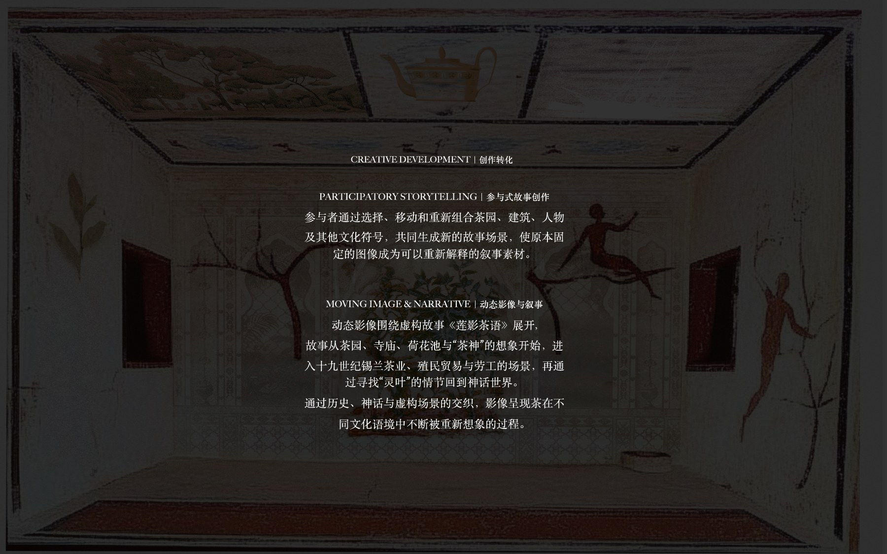
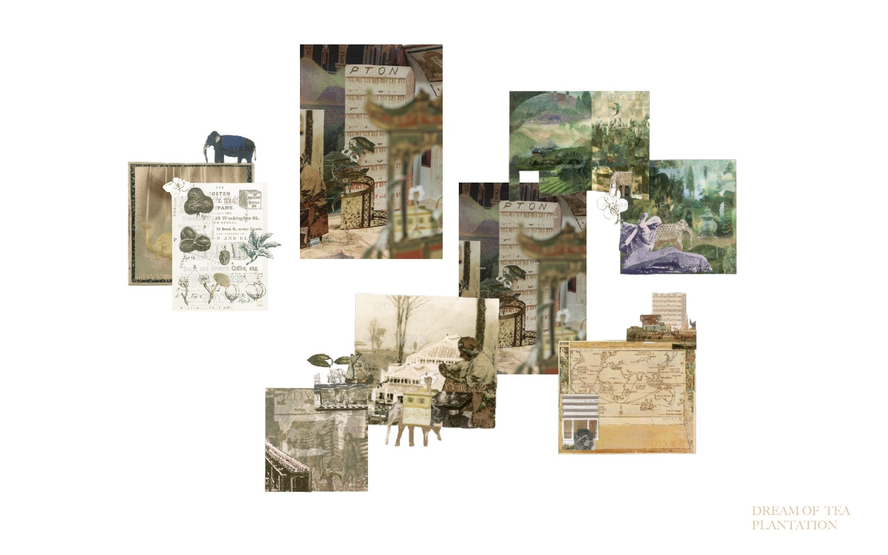

← 全部作品
参与式表演与互动装置
Dream of Tea Plantation
同一组图像，可以演出多少种茶的故事。
延续茶文化研究，借鉴木偶戏剧台构建互动装置，让参与者通过图像组合、故事编织与表演，共同生成非线性叙事。
图像研究、戏剧台装置设计、参与式表演组织木偶戏剧台形式的装置、图像与互动表演

正在加载模型… · Loading model…
拖动旋转 · 滚轮缩放
01 — 07
故事在滚动中展开
图像、记忆与茶的旅程





PROJECT
个人项目
ROLE
图像研究、戏剧台装置设计、参与式表演组织
FORMAT
木偶戏剧台形式的装置、图像与互动表演
延续茶文化研究，借鉴木偶戏剧台构建互动装置，让参与者通过图像组合、故事编织与表演，共同生成非线性叙事。
01
研究起点
同一组茶文化符号，在不同人的地域经验与想象中会产生怎样的故事？项目从固定的图像阅读延伸到共同参与的叙事过程。
02
创作选择
借鉴木偶戏剧台的结构，把图像置入可被组合与演绎的表演空间。参与者通过图像阅读、故事编织与表演，使茶文化的不同解释在互动中出现。
03
最终呈现
木箱装置、图像材料与参与式表演共同构成作品。戏剧台承载故事的发生，文化想象则通过参与者的不同演绎持续变化。
点击加载视频 · 如无法播放，可使用上方链接
NEXT PROJECT